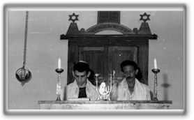

October 1993 marked the rebirth of Jewish life in Santiago de Cuba after 15 years of inactivity.
| |
|
|
|
For two years we carried on our communal activities in the home of Rebeca Botton Behar, president of our emerging community. We celebrated our Jewish holidays there.
July 25, 1995 was the special day on which we reopened the doors of our old Synagogue. It coincided with the day Santiago was celebrating the 480th anniversary of its founding. The Synagogue was dedicated by Rabbi Sh’muel Szteinhendler. After many years of silence we were able to listen to the sound of the shofar announcing loudly to all the descendants of Abraham that the people of Israel were alive in Santiago de Cuba!
Due to our great desire to learn the language, traditions, religion and culture of our ancestors, many of us are now able to read Torah and lead religious services.

A team of morim and madrichim (teachers and counselors) are responsible for guiding the community which currently has a Hebrew school. It is customary in our synagogue every Shabbat afternoon after morning Shajarit services to share a kiddush lunch and to study the weekly parsha (Torah portion). By enriching our Jewish learning, we are able to motivate all the members of our community.
In the cultural realm, we have formed two dance groups, which perform a wide repertoire of Israeli folk dances: a youth group called Atideinu ("Our Future") and a children’s troupe Etzim Ktanim ("Little Trees").
Life in HATIKVAH is filled with enjoyable moments. The activities and the time we spend together are growing all the time.
We have progressed a lot. As in the story of Chanukah, we have had a miracle here and the flame of Judaism again shines brightly in our synagogue. Let it always be so. AMEN SELA.
| Home Page | History of the Community | The Synagogue Today | Important Events |
| Cuban Jewish Community |